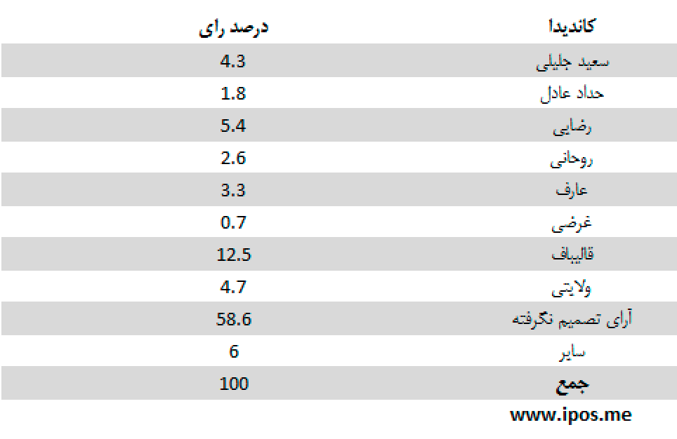
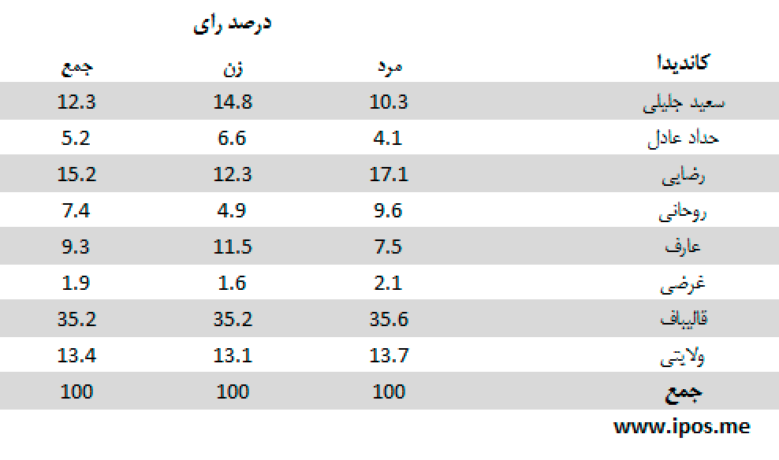

مهمترین یافتهها:
- هنوز اکثریت پاسخگویانی که میگویند در انتخابات 24 خرداد شرکت می کنند، فرد مورد نظر خود را انتخاب نکرده اند. با این حال میزان این عده در مقایسه با روز قبل از 61 به حدود 59 درصد کاهش یافته است.
- نوسانات آرای نامزدها به طور کلی هنوز اندک است. آقای قالیباف با اندکی افزایش رای، پیشتازی خود را حفظ کرده است، اما آقای رضایی جای آقای ولایتی را در رتبهی دوم به خود اختصاص داده است.
- از میان کسانی که می گویند در انتخابات شرکت خواهند کرد (بیش از 75 درصد)، 59 درصد هنوز رای و نظر مشخصی ندارند. 6 درصد نیز یا به اشخاصی غیر از نامزدهای موجود اظهار تمایل کرده یا از پاسخ خودداری کردهاند.
- در میان کل افراد متمایل به شرکت در انتخابات، آقای قالیباف با 12 درصد بالاتر از سایر نامزدها قرار دارد. بعد از ایشان، آقایان رضایی (5.4) و ولایتی (4.7) قرار دارند. آقای جلیلی با 4 درصد و آقایان عارف و روحانی با 3 درصد، آقای حدادعادل با 2 و آقای محمد غرضی با 1 درصد رتبه های های چهارم تا هشتم را به خود اختصاص دادهاند.
- اگر از میان پاسخگویانی که میگویند در انتخابات شرکت میکنند فقط کسانی در نظر گرفته شوند که تاکنون تصمیم گیری کرده و از میان 8 نامزد موجود یک نفر را انتخاب کرده اند، آن گاه آقای قالیباف با 35 درصد بالاتر از سایر نامزدها قرار دارند. بعد از ایشان، آقایان رضایی با 15 درصد، ولایتی با 13 درصد، جلیلی با 12 درصد، عارف با 9 درصد، روحانی با 7 درصد، حدادعادل با 5 درصد و غرضی با 2 درصد در رتبه های دوم تا هشتم قرار میگیرند.
سئوال: اگر قرار بود همین امروز در انتخابات ریاست جمهوری شرکت کنید به کدام یک از کاندیداها رای می دادید؟

این جدول نشان میدهد پاسخدهندگانی که میگویند در انتخابات شرکت می کنند، از نظر تصمیم گیری برای رای دادن در چه و ضعیت هایی قرار دارند.
سئوال: اگر قرار بود همین امروز در انتخابات ریاست جمهوری شرکت کنید به کدام یک از کاندیداها رای می دادید؟

این جدول نشان میدهد از میان پاسخدهندگانی که میگویند در انتخابات شرکت می کنند، و از میان 8 نامزد موجود یک نفر را انتخاب کرده اند، هریک از نامزدها چه میزان رای دارند.
جدول زیر میزان اقبال به نامزدها را بر اساس جنسیت (زن و مرد) نشان میدهد:

در جدول زیر میزان آرای نامزدها در میان دو گروه سنی (کمتر از 40 سال و بیشتر از 40 سال) مقایسه شده است:

انتخاب رای دهندگان در جدول زیر بر اساس سطح تحصیلات (بدون تحصیلات دانشگاهی و دارای تحصیلات دانشگاهی) مقایسه شده است:

در جدول زیر میزان آرای نامزدها در میان پاسخ دهندگان مقیم در مناطق شهری و غیر شهری مقایسه شده است:

تحلیل:
- میزان مشارکت بالای 70 درصد در این نظرسنجی لزوماً معادل میزان کسانی که در روز انتخابات رای می دهند نیست. در نظرسنجیها معمولاً میزان اعلام مشارکت، بیش از میزان مشارکت عملی در روز انتخابات است. این موضوع فقط به ایران اختصاص ندارد. به علاوه، با توجه به ملاحظات روانشناسی سیاسیِ حاکم بر جامعهی ایران، این رقم را باید با احتیاط تفسیر کرد.
- شکلگیری با تاخیر آرا باعث شده است تلاش برای جلب آرای رای دهندگان بدون تصمیم هنوز معنی دار باشد. با این حال نشانههای آرام حرکت در تغییر آرا از هم اکنون قابل مشاهده است، گرچه با نوساناتی اندک.
- بررسی آرای نامزدها بر اساس جنسیت پاسخگویان نشان می دهد از میان کسانی که به آقایان جلیلی، حداد و عارف رای می دهند، نسبت زنان اندکی بیشتر از مردان است.
- همچنین می توان گفت، در میان رای دهندگان به آقایان روحانی، عارف و قالیباف، افراد کمتر از 40 سال نسبت بیشتری از افراد بالای 40 سال دارند.
- اگر پای سطح تحصیلات به میان بیاید، میان رای دهندگان به آقایان عارف، روحانی و قالیباف، افراد با تحصیلات دانشگاهی، نسبت بیشتری دارند. تفاوت آقای عارف با سایر نامزدها در این زمینه چشمگیر است.
- وقتی پاسخگویان را بر حسب منطقه زندگی آنان به دو گروه شهری و غیر شهری (شامل جمعیت روستایی و عشایری) تقسیم کنیم، میتوان گفت که در میان رای دهندگان به آقای عارف نسبت شهریها و در میان رای دهندگان به آقای رضایی نسبت غیرشهریها بیشتر از بقیهی نامزدها است.
روش اجرای نظرسنجی
نظرسنجیهای iPOS به شیوه چرخشی (Rolling) چهار روزه انجام میشود.
نمونهگیری به صورت مرحلهای طبقهبندی شده در سطح استانها است. دارندگان تلفنهای ثابت و همراه در سطح کل کشور واحد نمونه را تشکیل میدهند. حجم نمونه 1067 نفر است.
یافتههای نظرسنجی را می توان با اطمینان 95 درصد و در فاصلهی اطمینان 3 درصد به کل افراد بالای 18 سال ایرانی ساکن ایران تعمیم داد.
مصاحبهها به صورت تلفنی و با پرسشگران آموزش دیده در طول ساعات فعال هرروز انجام میشود.